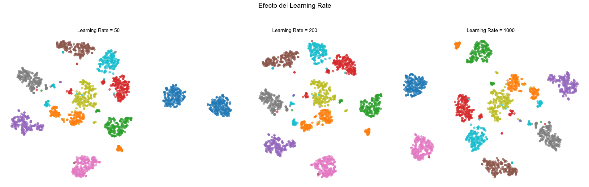
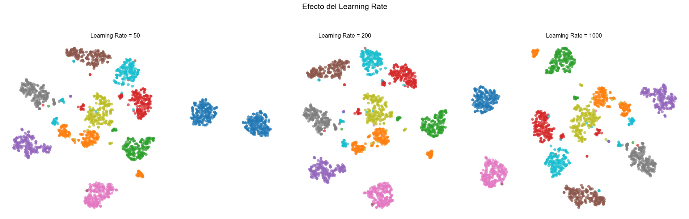

A continuación, se presenta un resumen de la matemática presente en los algoritmos t-SNE y UMAP, con un enfoque didáctico en las ecuaciones, su interpretación, y explicaciones de conceptos clave como la función Softmax y la Divergencia Kullback-Leibler.
Stochastic Neighbor Embedding (SNE) - Base de t-SNE
El t-SNE se basa en el Stochastic Neighbor Embedding (SNE). SNE convierte las distancias euclidianas entre puntos de datos en probabilidades condicionales que representan similitudes.
Probabilidades en el espacio de alta dimensión:
La probabilidad de que el punto de datos \(x_j\) sea un vecino del punto de datos \(x_i\) se define como:
\[p_{j|i} = \frac{\exp(-\|x_i - x_j\|^2 / 2\sigma_i^2)}{\sum_{k \neq i} \exp(-\|x_i - x_k\|^2 / 2\sigma_i^2)}\]
donde: * \(x_i\) y \(x_j\) son puntos de datos en el espacio de alta dimensión. * \(\|x_i - x_j\|^2\) es la distancia euclidiana al cuadrado entre \(x_i\) y \(x_j\). * \(\sigma_i\) es la desviación estándar de una gaussiana centrada en \(x_i\). Esta \(\sigma_i\) se ajusta para que la perplejidad de la distribución de probabilidad condicional sea igual a una perplejidad predefinida por el usuario. La perplejidad se define como: \[\text{Perp}(P_i) = 2^{H(P_i)}\] donde \(H(P_i)\) es la entropía de \(P_i\) en bits: \[H(P_i) = -\sum_j p_{j|i} \log_2 p_{j|i}\]
Es importante notar que \(p_{i|i} = 0\).
Probabilidades en el espacio de baja dimensión:
De manera similar, para los puntos \(y_i\) y \(y_j\) en el mapa de baja dimensión, se definen las probabilidades condicionales:
\[q_{j|i} = \frac{\exp(-\|y_i - y_j\|^2)}{\sum_{k \neq i} \exp(-\|y_i - y_k\|^2)}\]
Aquí no se usa la \(\sigma_i\) porque se quiere que la escala de las distancias en el mapa sea libremente ajustada por el algoritmo.
Función de costo de SNE:
SNE utiliza una función de costo basada en la divergencia Kullback-Leibler (KL) entre las distribuciones de probabilidad \(P_i\) (en alta dimensión) y \(Q_i\) (en baja dimensión):
\[C = \sum_i \text{KL}(P_i || Q_i) = \sum_i \sum_j p_{j|i} \log \frac{p_{j|i}}{q_{j|i}}\]
El objetivo es minimizar esta función de costo con respecto a las coordenadas \(y_i\) en el mapa. La minimización se realiza mediante un descenso de gradiente.
Gradiente de la función de costo de SNE:
El gradiente de la función de costo con respecto a \(y_i\) es:
\[\frac{\partial C}{\partial y_i} = \sum_j (p_{j|i} - q_{j|i} + p_{i|j} - q_{i|j})(y_i - y_j)\]
t-Distributed Stochastic Neighbor Embedding (t-SNE)
t-SNE introduce dos mejoras principales sobre SNE:
- Simetría en las probabilidades: En lugar de probabilidades condicionales asimétricas \(p_{j|i}\), t-SNE utiliza probabilidades conjuntas simétricas \(p_{ij}\).
- Distribución t de Student en baja dimensión: Reemplaza la distribución gaussiana en el espacio de baja dimensión con una distribución t de Student con un grado de libertad.
Probabilidades conjuntas simétricas en alta dimensión:
Las probabilidades \(p_{ij}\) se calculan como la media de las probabilidades condicionales simetrizadas:
\[p_{ij} = \frac{p_{j|i} + p_{i|j}}{2N}\]
donde \(N\) es el número de puntos de datos. Esto asegura que \(\sum_{i \neq j} p_{ij} = 1\). Una alternativa para calcular \(p_{ij}\) es: \[p_{ij} = \frac{\exp(-\|x_i - x_j\|^2 / 2\sigma^2)}{\sum_{k \neq l} \exp(-\|x_k - x_l\|^2 / 2\sigma^2)}\] La perplejidad se define como para SNE, pero ahora para la distribución simétrica \(P_i\).
Probabilidades conjuntas usando una distribución t de Student en baja dimensión:
Las probabilidades \(q_{ij}\) en el espacio de baja dimensión se definen utilizando una distribución t de Student con un grado de libertad (que es la distribución de Cauchy):
\[q_{ij} = \frac{(1 + \|y_i - y_j\|^2)^{-1}}{\sum_{k \neq l} (1 + \|y_k - y_l\|^2)^{-1}}\]
El uso de la distribución t de Student es crucial para t-SNE. La cola pesada de la distribución t de Student permite que las distancias moderadamente grandes en el espacio de alta dimensión se mapeen a distancias mayores en el espacio de baja dimensión. Esto ayuda a resolver el “problema de hacinamiento” (crowding problem) donde los puntos cercanos en alta dimensión tienden a aglomerarse en el centro del mapa de baja dimensión.
Función de costo de t-SNE:
La función de costo de t-SNE es nuevamente una divergencia KL, pero ahora entre las probabilidades conjuntas \(P\) y \(Q\):
\[C = \text{KL}(P || Q) = \sum_i \sum_j p_{ij} \log \frac{p_{ij}}{q_{ij}}\]
Gradiente de la función de costo de t-SNE:
El gradiente de la función de costo de t-SNE con respecto a \(y_i\) es:
\[\frac{\partial C}{\partial y_i} = 4 \sum_j (p_{ij} - q_{ij})(y_i - y_j)(1 + \|y_i - y_j\|^2)^{-1}\]
Este gradiente tiene una forma intuitiva: es una suma de fuerzas que empujan o tiran de los puntos \(y_i\). * Si \(p_{ij} > q_{ij}\), los puntos \(i\) y \(j\) están más cerca en el espacio de alta dimensión de lo que están en el mapa. Esto crea una fuerza atractiva (\(y_i - y_j\)) que los acerca en el mapa. * Si \(p_{ij} < q_{ij}\), los puntos \(i\) y \(j\) están más lejos en el espacio de alta dimensión. Esto crea una fuerza repulsiva (que se ve afectada por el término \((1 + \|y_i - y_j\|^2)^{-1}\)) que los aleja.
El término \((1 + \|y_i - y_j\|^2)^{-1}\) en el gradiente modera la fuerza de repulsión entre puntos que ya están suficientemente separados en el mapa, lo que es una característica clave para el “deshacinamiento” (uncrowding) y la formación de clústeres bien separados.
La Función Softmax: Convirtiendo Números en Probabilidades
Imagina que estás construyendo un modelo de inteligencia artificial para clasificar imágenes. Quieres que el modelo diga si una imagen es un “gato”, un “perro” o un “pájaro”. Al final de las “neuronas” de tu modelo, obtendrás unos números crudos, a menudo llamados “logits”. Estos logits pueden ser cualquier valor real (negativos, positivos, grandes, pequeños).
El problema: ¿Cómo transformamos estos números crudos en probabilidades significativas que sumen 1? Por ejemplo, si los logits para “gato”, “perro” y “pájaro” son \([2.0, 1.0, 0.1]\), ¿qué significa eso en términos de probabilidad?
Aquí es donde entra la función Softmax. Su trabajo es tomar un vector de números reales y transformarlo en una distribución de probabilidad, es decir, un vector de números entre 0 y 1 que suman 1.
La fórmula de Softmax para un vector \(z = [z_1, z_2, \dots, z_K]\) es:
\[\text{Softmax}(z_i) = \frac{e^{z_i}}{\sum_{j=1}^{K} e^{z_j}}\]
donde: * \(z_i\) es el \(i\)-ésimo elemento del vector de entrada. * \(e\) es la base del logaritmo natural (aproximadamente 2.71828). * La sumatoria en el denominador va sobre todos los elementos del vector \(z\).
¿Cómo funciona?
- Exponenciación: Primero, toma la exponencial de cada número de entrada (\(e^{z_i}\)). Esto hace que todos los números sean positivos. Además, magnifica las diferencias: un número ligeramente mayor se vuelve mucho más grande que uno ligeramente menor después de la exponenciación.
- Normalización: Luego, divide cada valor exponencial por la suma de todos los valores exponenciales. Esto asegura que todos los números resultantes estén entre 0 y 1 y que su suma sea exactamente 1.
Ejemplo Numérico:
Supongamos que tu modelo de clasificación de imágenes arroja los siguientes logits para las clases “gato”, “perro”, “pájaro”:
\(z = [z_{\text{gato}}, z_{\text{perro}}, z_{\text{pájaro}}] = [2.0, 1.0, 0.1]\)
Paso 1: Exponenciación
- \(e^{z_{\text{gato}}} = e^{2.0} \approx 7.389\)
- \(e^{z_{\text{perro}}} = e^{1.0} \approx 2.718\)
- \(e^{z_{\text{pájaro}}} = e^{0.1} \approx 1.105\)
Paso 2: Suma de los exponenciales (Denominador)
- \(\sum_{j=1}^{3} e^{z_j} = 7.389 + 2.718 + 1.105 = 11.212\)
Paso 3: Normalización (Cálculo de Softmax para cada clase)
- \(\text{Softmax}(z_{\text{gato}}) = \frac{7.389}{11.212} \approx 0.659\)
- \(\text{Softmax}(z_{\text{perro}}) = \frac{2.718}{11.212} \approx 0.242\)
- \(\text{Softmax}(z_{\text{pájaro}}) = \frac{1.105}{11.212} \approx 0.099\)
El vector de probabilidades resultante es aproximadamente \([0.659, 0.242, 0.099]\).
Interpretación: Esto nos dice que el modelo está “65.9% seguro” de que la imagen es un gato, “24.2% seguro” de que es un perro y “9.9% seguro” de que es un pájaro. La suma de estas probabilidades es \(0.659 + 0.242 + 0.099 = 1.000\).
La función Softmax es crucial en las redes neuronales para la clasificación, ya que proporciona una manera de interpretar las salidas crudas del modelo como probabilidades sobre las diferentes clases.
La Divergencia Kullback-Leibler (KL): Midiendo la Diferencia entre Distribuciones
La Divergencia Kullback-Leibler, o simplemente KL-Divergencia, es una medida de cuánto difiere una distribución de probabilidad de otra. No es una “distancia” en el sentido matemático estricto (como la distancia euclidiana), porque no es simétrica y no satisface la desigualdad triangular.
En t-SNE, la KL-Divergencia se utiliza como la función de costo que el algoritmo intenta minimizar. Mide cuán diferentes son las probabilidades de similitud entre puntos en el espacio de alta dimensión (\(P\)) y en el espacio de baja dimensión (\(Q\)). El objetivo es hacer que \(Q\) sea lo más parecido posible a \(P\).
La fórmula de la KL-Divergencia de una distribución \(Q\) con respecto a una distribución \(P\) (es decir, \(P\) es la “verdadera” o de referencia, y \(Q\) es nuestra aproximación) es:
\[\text{KL}(P || Q) = \sum_i P(i) \log \left( \frac{P(i)}{Q(i)} \right)\]
donde: * \(P(i)\) es la probabilidad de que el evento \(i\) ocurra en la distribución \(P\). * \(Q(i)\) es la probabilidad de que el evento \(i\) ocurra en la distribución \(Q\). * La suma se realiza sobre todos los posibles eventos o valores de la distribución.
¿Cómo funciona?
La KL-Divergencia es la esperanza del logaritmo de la razón de las probabilidades entre las dos distribuciones, donde la esperanza se toma sobre la distribución \(P\).
- Si \(P(i)\) y \(Q(i)\) son similares para un \(i\) dado: \(\frac{P(i)}{Q(i)}\) estará cerca de 1, y \(\log(1) = 0\). Esto contribuye poco a la divergencia.
- Si \(P(i)\) es grande pero \(Q(i)\) es pequeña: \(\frac{P(i)}{Q(i)}\) será grande, y \(\log(\text{grande})\) será un número positivo grande. Esto contribuye significativamente a la divergencia, penalizando fuertemente la situación en la que \(Q\) asigna una probabilidad baja a un evento que es probable en \(P\).
- Si \(P(i)\) es pequeña pero \(Q(i)\) es grande: \(\frac{P(i)}{Q(i)}\) será pequeña, y \(\log(\text{pequeña})\) será un número negativo grande. Sin embargo, como \(P(i)\) es pequeño, la contribución total \(P(i) \log \left( \frac{P(i)}{Q(i)} \right)\) será pequeña o incluso cercana a cero.
- Si \(P(i) = 0\) y \(Q(i) \neq 0\): La contribución es 0 (por definición de \(\log(0/Q(i)) = \log(0)\) que es indefinido, pero el límite es \(P(i)\log P(i)\) que tiende a 0).
- Si \(P(i) \neq 0\) y \(Q(i) = 0\): La divergencia se vuelve infinita. Esto significa que si la distribución de referencia \(P\) asigna alguna probabilidad a un evento, y la distribución \(Q\) le asigna cero probabilidad, la KL-Divergencia es infinita. ¡Esto es una penalización muy fuerte y deseable en t-SNE! Significa que no podemos permitir que \(Q\) no le dé probabilidad a algo que \(P\) sí considera probable.
Ejemplo Numérico: Midiendo la No-Simetría de KL
Consideremos dos distribuciones de probabilidad \(P\) y \(Q\) para un dado de 6 caras:
Distribución \(P\) (Dado Justo): \(P = [P(1), P(2), P(3), P(4), P(5), P(6)]\) \(P = [\frac{1}{6}, \frac{1}{6}, \frac{1}{6}, \frac{1}{6}, \frac{1}{6}, \frac{1}{6}] \approx [0.167, 0.167, 0.167, 0.167, 0.167, 0.167]\)
Distribución \(Q\) (Dado Cargado, favorece el 6): \(Q = [Q(1), Q(2), Q(3), Q(4), Q(5), Q(6)]\) \(Q = [0.1, 0.1, 0.1, 0.1, 0.1, 0.5]\)
Cálculo de \(\text{KL}(P || Q)\) (Cuánto difiere \(Q\) de \(P\)):
\[\text{KL}(P || Q) = \sum_{i=1}^{6} P(i) \log \left( \frac{P(i)}{Q(i)} \right)\]
- Para \(i=1, \dots, 5\): \(P(i) = \frac{1}{6}\), \(Q(i) = 0.1\)
- \(\frac{P(i)}{Q(i)} = \frac{1/6}{0.1} = \frac{0.167}{0.1} \approx 1.67\)
- \(P(i) \log \left( \frac{P(i)}{Q(i)} \right) \approx 0.167 \times \log(1.67) \approx 0.167 \times 0.513 \approx 0.0857\) (para cada uno de los 5 casos)
- Para \(i=6\): \(P(6) = \frac{1}{6}\), \(Q(6) = 0.5\)
- \(\frac{P(6)}{Q(6)} = \frac{1/6}{0.5} = \frac{0.167}{0.5} \approx 0.334\)
- \(P(6) \log \left( \frac{P(6)}{Q(6)} \right) \approx 0.167 \times \log(0.334) \approx 0.167 \times (-1.096) \approx -0.183\)
Sumando todo: \(\text{KL}(P || Q) \approx (5 \times 0.0857) + (-0.183) = 0.4285 - 0.183 = 0.2455\)
Cálculo de \(\text{KL}(Q || P)\) (Cuánto difiere \(P\) de \(Q\)):
\[\text{KL}(Q || P) = \sum_{i=1}^{6} Q(i) \log \left( \frac{Q(i)}{P(i)} \right)\]
- Para \(i=1, \dots, 5\): \(Q(i) = 0.1\), \(P(i) = \frac{1}{6}\)
- \(\frac{Q(i)}{P(i)} = \frac{0.1}{1/6} = \frac{0.1}{0.167} \approx 0.6\)
- \(Q(i) \log \left( \frac{Q(i)}{P(i)} \right) \approx 0.1 \times \log(0.6) \approx 0.1 \times (-0.511) \approx -0.0511\) (para cada uno de los 5 casos)
- Para \(i=6\): \(Q(6) = 0.5\), \(P(6) = \frac{1}{6}\)
- \(\frac{Q(6)}{P(6)} = \frac{0.5}{1/6} = \frac{0.5}{0.167} \approx 2.99\)
- \(Q(6) \log \left( \frac{Q(6)}{P(6)} \right) \approx 0.5 \times \log(2.99) \approx 0.5 \times 1.095 \approx 0.5475\)
Sumando todo: \(\text{KL}(Q || P) \approx (5 \times -0.0511) + 0.5475 = -0.2555 + 0.5475 = 0.292\)
Conclusión sobre la No-Simetría:
Como puedes ver, \(\text{KL}(P || Q) \approx 0.2455\) y \(\text{KL}(Q || P) \approx 0.292\). \(\text{KL}(P || Q) \neq \text{KL}(Q || P)\). Esto demuestra claramente que la KL-Divergencia no es simétrica. El costo de modelar mal a \(P\) usando \(Q\) no es el mismo que el costo de modelar mal a \(Q\) usando \(P\).
Importancia en t-SNE:
En t-SNE, usamos \(\text{KL}(P || Q)\). Esto significa que penalizamos fuertemente cuando \(Q\) le da una probabilidad baja a pares de puntos que en alta dimensión (\(P\)) eran muy similares. Es decir, si \(P_{ij}\) es grande (puntos \(i\) y \(j\) son vecinos cercanos en alta dimensión), pero \(Q_{ij}\) es pequeño (puntos \(i\) y \(j\) están lejos en baja dimensión), la función de costo aumenta significativamente. Esto fuerza a t-SNE a preservar las relaciones de “vecindad” (cercanía) del espacio original.
La asimetría de la KL-Divergencia es una característica deseada en t-SNE. Si fuera simétrica, penalizaría tanto cuando \(P\) asigna una probabilidad alta y \(Q\) una baja, como cuando \(P\) asigna una probabilidad baja y \(Q\) una alta. Esto último no es lo que queremos. Queremos que los vecinos permanezcan vecinos, pero no nos importa tanto si los no-vecinos se acercan un poco si eso ayuda a acomodar a los verdaderos vecinos. La KL asimétrica, con la penalización pesada cuando \(Q(i)\) es cero y \(P(i)\) no, es ideal para esto.
 
